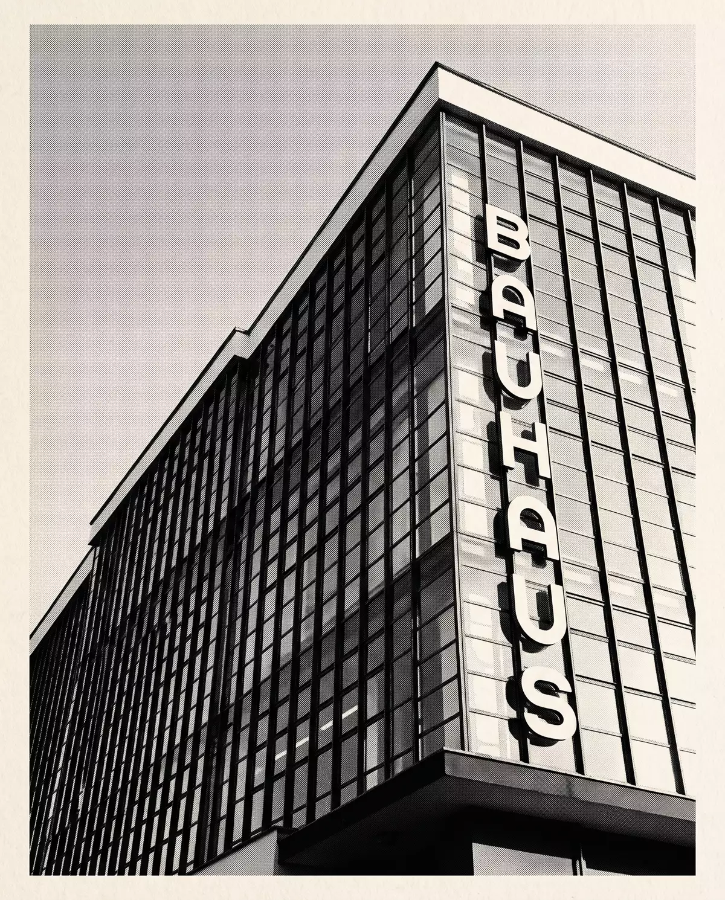

Tageskarte
14€
Ausstellung, Bauhausgebäude und das Bühnenprogramm des Tages. Ein Tag, ein Haus, hundert Jahre.
Karte wählenJubiläumsausstellung · Bauhausgebäude Dessau
Hundert Jahre nach der Eröffnung des Dessauer Baus fragt eine Ausstellung, was der Form wirklich folgt: die Funktion, das Material — oder die Bühne.
Dessau · 1926–2026
Weiter
Manifest · Weimar 1919
„Das Endziel aller bildnerischen Tätigkeit ist der Bau!“ Walter Gropius, Bauhaus-Manifest, Weimar 1919
1919 in Weimar gegründet, 1925 nach Dessau gezogen: Am 4. Dezember 1926 eröffnet Gropius den neuen Bau — Stahlbeton, Glasvorhangfassade, ein Schriftzug senkrecht an der Fassade. Das Gebäude selbst ist das erste Ausstellungsstück.
Im Vorkurs verlangt Josef Albers maximale Wirkung bei minimalem Aufwand: ein Blatt Papier, gefaltet statt geklebt, trägt plötzlich Last. Kandinskys Fragebogen von 1923 ordnet zu: Dreieck gelb, Quadrat rot, Kreis blau. Diese Ausstellung widerspricht ihm mit Absicht — sehen Sie oben.
Gropiusallee 38 · Aufnahme 1926

Am 4. Dezember 1926 öffnet der Bau an der Gropiusallee: ein Stahlbetonskelett, davor die berühmte Glasvorhangfassade des Werkstattflügels — drei Geschosse Werkstatt hinter einer einzigen, hängenden Glashaut. Senkrecht an der Brücke: sechs Buchstaben, BAUHAUS, gesetzt von Herbert Bayer. Das Haus ist Plakat, Programm und Exponat zugleich.
Katalognummer 001 dieser Ausstellung ist deshalb keine Teekanne und kein Sessel, sondern die Aufnahme des Gebäudes selbst: ein Duotondruck im Rasterkorn der zwanziger Jahre, Tinte auf Papier. Drei Farbtafeln verschließen die Platte — sie öffnen sich, sobald Sie ankommen.
Fassaden-Partitur — acht Takte, geführt von Ihrem Scrollen, eingerastet auf dem Raster.
Rundgang · Sechs Räume
Sechs Räume, sechs Werkstätten, sechs Antworten auf dieselbe Frage. Jeder Raum zeigt ein Schlüsselobjekt im Original — und die Übung, aus der es entstand.
Schlemmer · Bühnenwerkstatt
Ab 1923 leitet Oskar Schlemmer die Bühnenwerkstatt. Sein Tänzer ist keine Person, sondern Geometrie in Bewegung: Der Arm wird zur Keule, der Rumpf zum Kegel, der Kopf zur Kugel. Im Triadischen Ballett tanzen drei Figurinen durch Gelb, Rosa und Schwarz.
Dieser Raum gehorcht denselben Regeln wie Schlemmers Bühne: Schwerkraft, Fläche, Takt. Lassen Sie die Körper fallen — sie finden ihre Komposition selbst.
„Der Mensch, die Kunstfigur.“
Oskar Schlemmer, Bauhausbuch Nr. 4 „Die Bühne im Bauhaus“, 1925
Vier Körper, ein Gesetz: Schwerkraft.
Karten · Kasse Gropiusallee
Die Karte gilt für Ausstellung und Gebäude — einschließlich Werkstattflügel, Festebene und der berühmten Glasvorhangfassade von innen.
14€
Ausstellung, Bauhausgebäude und das Bühnenprogramm des Tages. Ein Tag, ein Haus, hundert Jahre.
Karte wählen8€
Für Schüler:innen, Studierende und Auszubildende — das Bauhaus war eine Schule, ihr habt Vorrang.
Karte wählen100€
Freier Eintritt während der gesamten Laufzeit, inklusive der Reprise des Triadischen Balletts auf der Festebene.
Pass wählenGeöffnet Dienstag bis Sonntag, 10–18 Uhr. Montags bleibt das Haus den Werkstätten vorbehalten — so hielt es schon der Lehrplan von 1926.